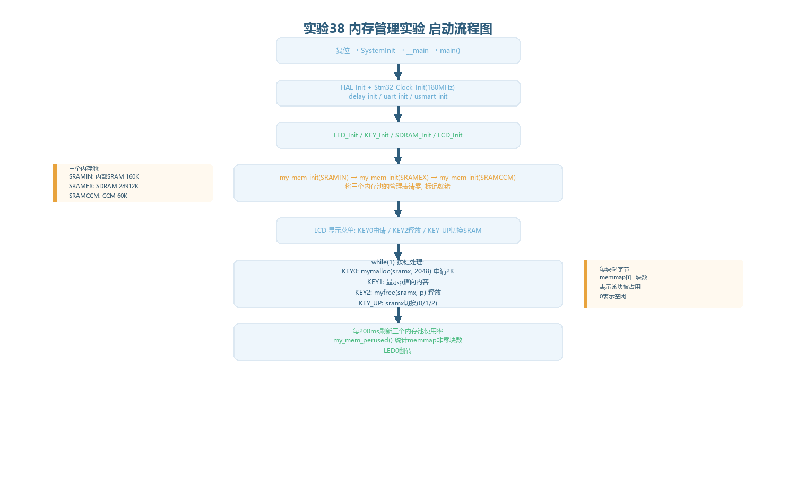
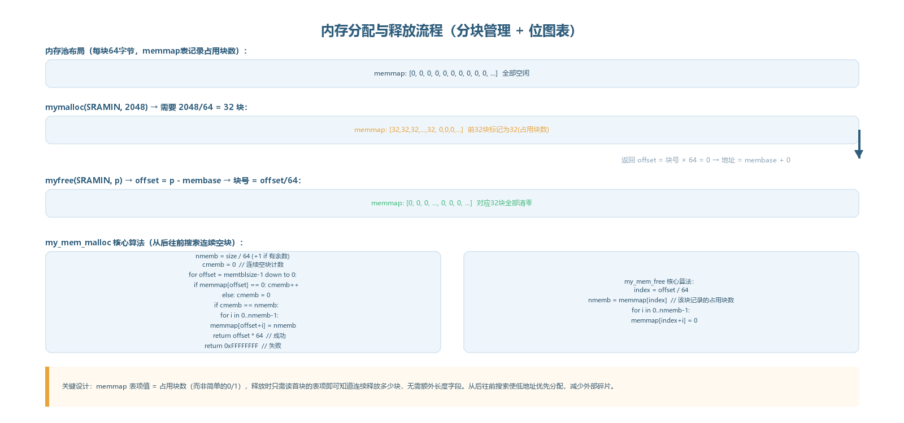
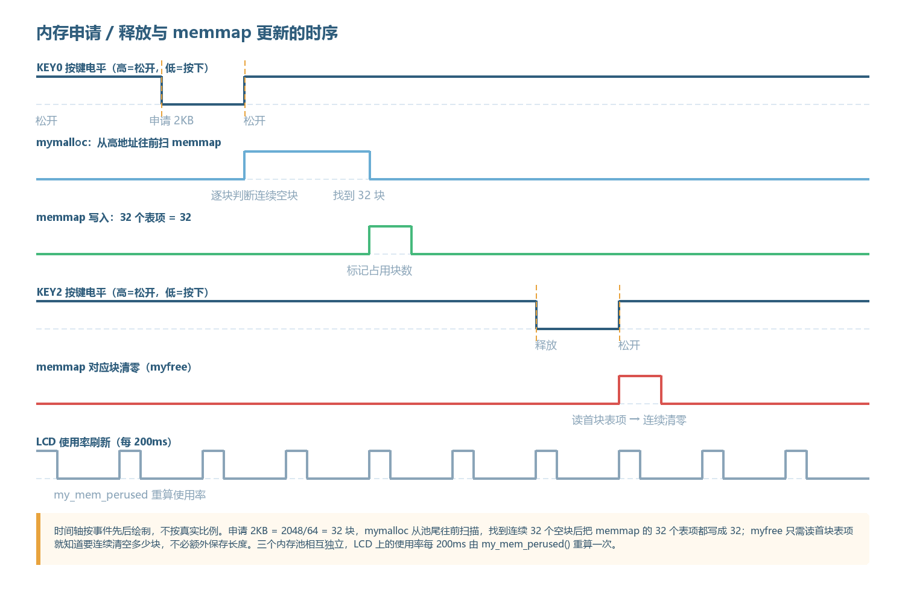
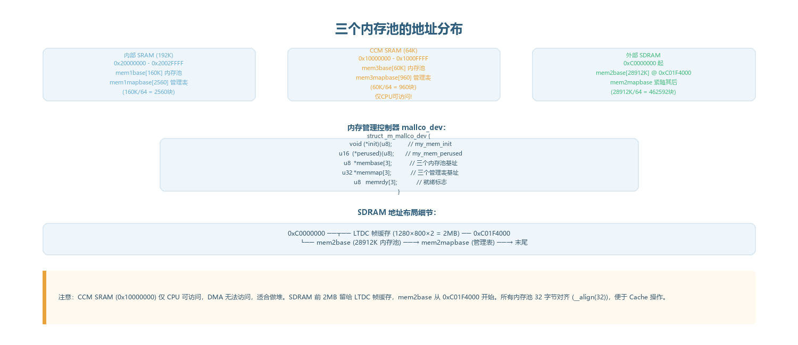

01 实验目标与硬件资源
自己实现一套分块式动态内存管理，把内部 SRAM、外部 SDRAM、CCM 三块内存统一管起来
本实验不调用标准库的 malloc/free，而是在 MALLOC/malloc.c 里用“内存池 + 内存管理表”自己实现一套分配器，把芯片里的三块 RAM 分别管理：内部 SRAM（SRAMIN）、外部 SDRAM（SRAMEX）、CCM（SRAMCCM）。与实验 37 摄像头实验相比，本页的重点从“外设时序”换成了“内存布局与分配算法”，但启动链路（复位→SystemInit→main）完全一致。
| 资源 | 地址 / 配置 | 说明 |
|---|---|---|
| SRAMIN 内存池 | mem1base[MEM1_MAX_SIZE]，160KB | 内部 SRAM，块大小 64B |
| SRAMEX 内存池 | 0xC01F4000 起，28912KB | 外部 SDRAM，前 2MB 已被 LTDC 显存占用 |
| SRAMCCM 内存池 | 0x10000000 起，60KB | CCM 仅 CPU 可访问，DMA 不能读写 |
| SDRAM 控制器 | FMC Bank1，HCLK/2 = 90MHz | 13 行 × 9 列 × 16bit × 4 Bank |
| 调试串口 | USART1，115200-8-N-1 | printf 重定向输出 |
| 按键 | KEY0 / KEY1 / KEY2 / WKUP | 申请 / 读取 / 释放 / 切换内存池 |
分块式管理
64B / 块
3 个内存池
USMART 调试
CCM 内存只能被 CPU 访问，若把 DMA 缓冲区放到
SRAMCCM，DMA 传输会失败且不报错，这是本实验最容易踩的坑。02 目录与文件分工
先看清每个文件负责哪一段，再顺着启动顺序读代码
| 文件 | 职责 | 本页关注点 |
|---|---|---|
USER/main.c | 入口、初始化顺序、按键业务 | my_mem_init 三次调用、主循环分支 |
CORE/startup_stm32f429xx.s | 向量表、栈堆、Reset_Handler | 初始 MSP、SystemInit→__main |
USER/system_stm32f4xx.c | SystemInit：FPU、VTOR、时钟复位 | FPU 使能、向量表重定位 |
SYSTEM/sys/sys.c | Stm32_Clock_Init 等系统函数 | PLL 参数与总线分频 |
SYSTEM/delay/delay.c | SysTick 轮询延时 | fac_us、递减计数换算 |
SYSTEM/usart/usart.c | USART1 初始化与 printf 重定向 | fputc 轮询发送 |
HARDWARE/SDRAM/sdram.c | FMC 配置 SDRAM | 时序参数与刷新计数 |
MALLOC/malloc.c | 内存池与分配算法（本实验核心） | my_mem_malloc/free |
MALLOC/malloc.h | 内存池宏与接口声明 | 块大小、池大小、结构体 |
USER/usmart/usmart.c | 串口命令行调试组件 | usmart_dev.init(90) |
阅读顺序建议：
startup_*.s → system_stm32f4xx.c → main.c → malloc.c。前三个决定“程序怎么跑起来”，最后一个是“本实验要讲的东西”。03 启动流程总览
从上电复位到 while(1)，初始化顺序决定了三个内存池能否被正确管理

main 函数全文
int main(void)
{
u8 paddr[20]; // 存放 "P Addr:0X........" 字符串
u16 memused=0;
u8 key;
u8 i=0;
u8 *p=0; // 当前申请到的内存首地址
u8 *tp=0; // 上一次显示的地址，用于判断是否变化
u8 sramx=0; // 0=SRAMIN 1=SRAMEX 2=SRAMCCM
HAL_Init(); // HAL 时基、NVIC 优先级分组
Stm32_Clock_Init(360,25,2,8); // HSE 25M → SYSCLK 180MHz
delay_init(180); // SysTick 延时倍乘数
uart_init(115200); // USART1，printf 用
usmart_dev.init(90); // USMART 调试，参数为系统主频(MHz)
LED_Init(); // 指示灯
KEY_Init(); // 四个按键
SDRAM_Init(); // 必须先初始化 SDRAM 才能用 SRAMEX 池
LCD_Init(); // LCD 显示
my_mem_init(SRAMIN); // 内部 SRAM 内存池
my_mem_init(SRAMEX); // 外部 SDRAM 内存池
my_mem_init(SRAMCCM); // CCM 内存池
POINT_COLOR=RED;
LCD_ShowString(30,50,200,16,16,"Apollo STM32F4/F7");
// ... 省略若干 LCD 提示字符串 ...
while(1)
{
key=KEY_Scan(0); // 0 = 不支持连按
switch(key)
{
case KEY0_PRES: // 申请 2KB
p=mymalloc(sramx,2048);
if(p!=NULL)sprintf((char*)p,"Memory Malloc Test%03d",i);
break;
case KEY1_PRES: // 读取内容并显示
if(p!=NULL)
{
sprintf((char*)p,"Memory Malloc Test%03d",i);
LCD_ShowString(30,270,200,16,16,p);
}
break;
case KEY2_PRES: // 释放
myfree(sramx,p);
p=0;
break;
case WKUP_PRES: // 切换内存池
sramx++;
if(sramx>2)sramx=0;
break;
}
delay_ms(10);
i++;
if((i%20)==0) // 约 200ms 刷新一次使用率
{
LED0=!LED0;
}
}
}
关键逻辑说明
- 顺序不可调换：
SDRAM_Init()必须在my_mem_init(SRAMEX)之前，因为 SRAMEX 内存池的物理地址0xC01F4000属于 SDRAM 空间，FMC 没配置好时读写会进入 HardFault。 - 三次
my_mem_init：每个内存池各有一张管理表，初始化只是把表清零并把memrdy[memx]置 1，不擦除内存池本身。 - 为什么用
sramx传参：分配与释放必须使用同一个内存池编号，KEY0 申请时用的池子，KEY2 释放时也必须是同一个，否则偏移量会被算到别的池子里，造成内存表被破坏。 - 主循环节拍：
delay_ms(10)使循环约 100Hz，i%20即 200ms 刷新一次使用率并翻转 LED0，这是“程序还活着”的可视信号。
04 启动文件与向量表
复位后 CPU 取哪条指令、栈从哪里开始、向量表放在哪里
CORE/startup_stm32f429xx.s 是汇编启动文件。Cortex-M4 复位时硬件自动从地址 0x08000000 取第一个字作为初始 MSP，从 0x08000004 取第二个字作为复位向量，跳到 Reset_Handler。
Stack_Size EQU 0x400; // 主栈 1KB AREA STACK, NOINIT, READWRITE, ALIGN=3 Stack_Mem SPACE Stack_Size __initial_sp Heap_Size EQU 0x200; // 堆 512B，本工程不用库 malloc AREA HEAP, NOINIT, READWRITE, ALIGN=3 __heap_base Heap_Mem SPACE Heap_Size __heap_limit PRESERVE8 THUMB AREA RESET, DATA, READONLY EXPORT __Vectors __Vectors DCD __initial_sp // 第 0 项：初始 MSP DCD Reset_Handler // 第 1 项：复位向量 DCD NMI_Handler DCD HardFault_Handler // ... 其余异常与外设中断向量 ... Reset_Handler PROC EXPORT Reset_Handler [WEAK] IMPORT SystemInit IMPORT __main LDR R0, =SystemInit BLX R0 // 先跑 SystemInit LDR R0, =__main BX R0 // 再进 C 库启动，最终调用 main ENDP
关键逻辑说明
- 初始 MSP 来自向量表第 0 项：
__initial_sp就是栈顶地址（栈向低地址生长），不是栈底。 - 为什么先
SystemInit再__main：__main会完成.data从 Flash 到 SRAM 的复制、.bss清零，并把栈指针交还给 C 环境；而SystemInit需要在这之前把 FPU、向量表、时钟恢复到确定状态。 - 弱符号
[WEAK]：启动文件里所有中断服务函数都只给一个弱定义（默认死循环），C 文件里写同名函数即可覆盖。stm32f4xx_it.c与usart.c就是这样接管SysTick_Handler、USART1_IRQHandler的。 - 堆只有 512B：本工程不使用 C 库的
malloc，所有动态内存都走mymalloc()，所以堆大小与内存池容量无关。
05 SystemInit 与 HAL_Init
C 环境建立前的硬件准备，与 C 环境建立后的 HAL 时基
SystemInit：FPU 与向量表
void SystemInit(void)
{
#if (__FPU_PRESENT == 1) && (__FPU_USED == 1)
SCB->CPACR |= ((3UL << 10*2)|(3UL << 11*2)); // CP10/CP11 全访问，开启硬件 FPU
#endif
RCC->CR |= (uint32_t)0x00000001; // 打开 HSION
RCC->CFGR = 0x00000000;
RCC->CR &= (uint32_t)0xFEF6FFFF;
// ... 省略：把 PLL、HSE、CSS 全部复位到默认值 ...
#ifdef VECT_TAB_SRAM
SCB->VTOR = SRAM_BASE | VECT_TAB_OFFSET;
#else
SCB->VTOR = FLASH_BASE | VECT_TAB_OFFSET; // 0x08000000，向量表在 Flash
#endif
}
关键逻辑说明
- FPU 必须先开：
CPACR的 CP10/CP11 若不清零，任何VMOV/VADD浮点指令都会触发 UsageFault；本实验虽然不跑算法，但 HAL 与 printf 都可能用到浮点。 - SystemInit 不配置最终主频：它只把时钟复位到 HSI 16MHz，真正切到 PLL 180MHz 是
main里的Stm32_Clock_Init()。 - VTOR 重定位：本工程
VECT_TAB_OFFSET = 0x00，所以向量表仍在 Flash 起始处；做 IAP 时把程序搬到别的地址，就必须同步改这个偏移，否则中断会跳错。
HAL_Init：时基与优先级分组
HAL_StatusTypeDef HAL_Init(void)
{
HAL_NVIC_SetPriorityGrouping(NVIC_PRIORITYGROUP_4); // 4 位抢占，0 位子优先级
HAL_InitTick(TICK_INT_PRIORITY); // 默认 1ms SysTick，优先级 0
HAL_InitTick(TICK_INT_PRIORITY);
return HAL_OK;
}
关键逻辑说明
- 优先级分组：
NVIC_PRIORITYGROUP_4表示 4 位全部给抢占优先级（0~15），没有子优先级。后面HAL_NVIC_SetPriority(x, a, b)的第三个参数在这个分组下不起作用，这一点在配置中断时经常被误解。 - HAL 时基：
HAL_InitTick用 SysTick 产生 1ms 中断，HAL_Delay()、HAL_GetTick()以及各种超时判断都依赖它。 - 与 delay_init 的区别：HAL 的 SysTick 是“中断计数”，本工程的
delay_us()是“轮询计数”，两者共用 SysTick 但互不干扰，因为delay_init里只改了时钟源与fac_us，没有关闭中断。
06 时钟树与 SysTick 时基
180MHz 是怎么算出来的，delay_us 又怎么用它
PLL 参数计算
void Stm32_Clock_Init(u32 plln,u32 pllm,u32 pllp,u32 pllq)
{
__HAL_RCC_PWR_CLK_ENABLE();
__HAL_PWR_VOLTAGESCALING_CONFIG(PWR_REGULATOR_VOLTAGE_SCALE1); // 电压等级 1，对应 180MHz
RCC_OscInitStructure.OscillatorType = RCC_OSCILLATORTYPE_HSE;
RCC_OscInitStructure.HSEState = RCC_HSE_ON;
RCC_OscInitStructure.PLL.PLLState = RCC_PLL_ON;
RCC_OscInitStructure.PLL.PLLSource = RCC_PLLSOURCE_HSE;
RCC_OscInitStructure.PLL.PLLM = pllm; // 25
RCC_OscInitStructure.PLL.PLLN = plln; // 360
RCC_OscInitStructure.PLL.PLLP = pllp; // 2
RCC_OscInitStructure.PLL.PLLQ = pllq; // 8
HAL_RCC_OscConfig(&RCC_OscInitStructure);
HAL_PWREx_EnableOverDrive(); // F429 跑 180MHz 必须开 Over-Drive
RCC_ClkInitStructure.SYSCLKSource = RCC_SYSCLKSOURCE_PLLCLK;
RCC_ClkInitStructure.AHBCLKDivider = RCC_SYSCLK_DIV1; // HCLK = 180MHz
RCC_ClkInitStructure.APB1CLKDivider = RCC_HCLK_DIV4; // PCLK1 = 45MHz
RCC_ClkInitStructure.APB2CLKDivider = RCC_HCLK_DIV2; // PCLK2 = 90MHz
HAL_RCC_ClockConfig(&RCC_ClkInitStructure,FLASH_LATENCY_5); // 180MHz 需要 5WS
}
| 项目 | 算式 | 结果 |
|---|---|---|
| PLL 输入 | HSE 25MHz / PLLM 25 | 1MHz |
| VCO 频率 | 1MHz × PLLN 360 | 360MHz |
| SYSCLK | 360MHz / PLLP 2 | 180MHz |
| HCLK（AHB） | 180MHz / 1 | 180MHz |
| PCLK1（APB1） | 180MHz / 4 | 45MHz |
| PCLK2（APB2） | 180MHz / 2 | 90MHz |
| USB / SDIO / RNG | 360MHz / PLLQ 8 | 45MHz |
| SysTick | HCLK = 180MHz | 1 计数 = 1/180μs |
delay_init 与 delay_us
void delay_init(u8 SYSCLK)
{
HAL_SYSTICK_CLKSourceConfig(SYSTICK_CLKSOURCE_HCLK); // SysTick 时钟源 = HCLK
fac_us = SYSCLK; // 180：每微秒 180 个计数
}
void delay_us(u32 nus)
{
u32 ticks = nus * fac_us; // 需要等待的计数个数
u32 told = SysTick->VAL; // 递减计数器当前值
while(1)
{
u32 tnow = SysTick->VAL;
if(tnow != told)
{
if(tnow < told) tcnt += told - tnow; // 未回绕
else tcnt += reload - tnow + told; // 已回绕，补上 LOAD
told = tnow;
if(tcnt >= ticks) break;
}
}
}
关键逻辑说明
- Over-Drive 与电压等级：F429 在 168MHz 以上必须先把调压器设为 Scale 1 并开启 Over-Drive，否则 PLL 输出 180MHz 时内核会取指错误。
- FLASH_LATENCY_5：180MHz 下 Flash 需要 5 个等待周期（6 个 CPU 周期完成一次取指），这个值配小了会跑飞。
- fac_us = SYSCLK：SysTick 时钟为 HCLK=180MHz，1μs 正好 180 个计数，所以传入的
SYSCLK必须与实际主频一致，delay_ms(10)才是真的 10ms。 - 递减计数回绕处理：
SysTick->VAL从 LOAD 递减到 0 后回绕，代码用reload - tnow + told补上跨过 0 的那一段，这是轮询式延时的标准写法。
07 分块式内存管理原理
内存池被切成 64 字节的块，管理表记录每块被谁占用

这套分配器不做字节级碎片合并，而是把整块内存按固定大小切块：内部 SRAM 与 SDRAM 每块 64 字节，CCM 也是 64 字节。管理表 memmap 与内存池一一对应，表项的值表示“从本块开始连续占用了多少块”：
| memmap 表项的值 | 含义 |
|---|---|
| 0 | 本块空闲 |
| n（n≥1） | 本块是某次分配的起始块，且该次分配占用了连续 n 块 |
| 非 0 但不是起始块 | 属于某次分配的中间/末尾块，值同样是 n |
#define MEM1_BLOCK_SIZE 64 // 块大小 64B #define MEM1_MAX_SIZE 160*1024 // 160KB #define MEM1_ALLOC_TABLE_SIZE MEM1_MAX_SIZE/MEM1_BLOCK_SIZE // 2560 项 __align(32) u8 mem1base[MEM1_MAX_SIZE]; // 内存池 u32 mem1mapbase[MEM1_ALLOC_TABLE_SIZE]; // 管理表
关键逻辑说明
- 为什么用 32 字节对齐：
__align(32)让内存池首地址落在 32 字节边界，配合 CPU 的 Cache/总线突发访问可以避免非对齐访问的性能损失。 - 表项存块数而不是 0/1：释放时只要从起始块读出连续块数 n，就能把 n 个表项一次性清零，不需要额外的“分配记录链表”。
- 固定块大小的代价：申请 65 字节会占用 2 块（128 字节），产生内部碎片；好处是实现简单、分配时间可预测，适合嵌入式。
08 内存分配 my_mem_malloc
从表尾向表头扫描，找到连续 nmemb 个空闲块

u32 my_mem_malloc(u8 memx,u32 size)
{
signed long offset=0;
u32 nmemb; // 需要的块数
u32 cmemb=0; // 当前连续空闲块数
u32 i;
if(!mallco_dev.memrdy[memx]) mallco_dev.init(memx); // 懒初始化
if(size==0) return 0XFFFFFFFF; // 0 字节不分配
nmemb = size/memblksize[memx]; // 向上取整
if(size%memblksize[memx]) nmemb++;
for(offset=memtblsize[memx]-1; offset>=0; offset--) // 从表尾往表头找
{
if(!mallco_dev.memmap[memx][offset]) cmemb++; // 空闲块累加
else cmemb=0; // 遇到占用块清零
if(cmemb==nmemb) // 找到连续 nmemb 块
{
for(i=0;i<nmemb;i++)
mallco_dev.memmap[memx][offset+i]=nmemb; // 每块都记下总块数
return offset*memblksize[memx]; // 返回字节偏移
}
}
return 0XFFFFFFFF; // 无足够连续空间
}
关键逻辑说明
- 向上取整：
size/64取整后再判断余数，保证 65 字节也至少占 2 块，不会出现“分配出去却覆盖相邻块”的问题。 - 为什么从表尾往表头扫描：低地址区域更容易被频繁申请释放，从高地址开始找可以降低与系统栈、全局变量争抢的概率；同时算法上等价于首次适配的一个变种。
- 表项写 nmemb 而不是 1：这样释放时从任意一块都能反推这次分配的总块数；但注意只有起始块能用于
myfree，所以mymalloc返回的一定是起始块地址。 - 返回偏移而非地址：内部函数返回相对内存池起始的字节偏移，由外层
mymalloc加上池首地址，便于把“池编号 + 偏移”作为唯一标识。
09 内存释放与重分配
myfree / myrealloc 如何把偏移换算回表项
u8 my_mem_free(u8 memx,u32 offset)
{
int i;
if(!mallco_dev.memrdy[memx]) // 未初始化则先初始化并报错
{
mallco_dev.init(memx);
return 1;
}
if(offset < memsize[memx]) // 偏移必须在池内
{
int index = offset/memblksize[memx]; // 偏移 → 块号
int nmemb = mallco_dev.memmap[memx][index]; // 读出连续块数
for(i=0;i<nmemb;i++)
mallco_dev.memmap[memx][index+i]=0; // 整段清零
return 0;
}
return 2; // 偏移越界
}
void myfree(u8 memx,void *ptr)
{
u32 offset;
if(ptr==NULL) return; // 空指针直接返回
offset = (u32)ptr - (u32)mallco_dev.membase[memx]; // 地址 → 池内偏移
my_mem_free(memx,offset);
}
void *myrealloc(u8 memx,void *ptr,u32 size)
{
u32 offset = my_mem_malloc(memx,size); // 先申请新空间
if(offset==0XFFFFFFFF) return NULL;
mymemcpy((void*)((u32)mallco_dev.membase[memx]+offset),ptr,size); // 拷贝旧内容
myfree(memx,ptr); // 再释放旧空间
return (void*)((u32)mallco_dev.membase[memx]+offset);
}
关键逻辑说明
- 地址 → 偏移：用户拿到的是绝对地址，释放时必须减去池首地址
membase[memx]，得到相对偏移；如果传入了别的池的指针，减出来的偏移会落在错误区间，管理表就被破坏。 - 只清零不合并：释放只是把那一段表项清 0，相邻空闲块在下一次分配扫描时会自然连成更大的连续区间，不需要显式合并链表。
- myrealloc 的隐患：拷贝长度直接用新
size，若新空间比旧空间大，会读到旧块之外的内存；这是该实现的已知局限，工程中只在“扩容且能保证旧长度”时使用。 - 返回值约定：
0成功、1未初始化、2越界，调用方可以据此区分错误类型。
10 外部 SDRAM 初始化
SRAMEX 池的物理基础：FMC 配置 13 行 9 列 16 位 SDRAM
void SDRAM_Init(void)
{
SDRAM_Handler.Instance = FMC_SDRAM_DEVICE;
SDRAM_Handler.Init.SDBank = FMC_SDRAM_BANK1; // BANK5
SDRAM_Handler.Init.ColumnBitsNumber = FMC_SDRAM_COLUMN_BITS_NUM_9; // 9 位列地址
SDRAM_Handler.Init.RowBitsNumber = FMC_SDRAM_ROW_BITS_NUM_13; // 13 行地址
SDRAM_Handler.Init.MemoryDataWidth = FMC_SDRAM_MEM_BUS_WIDTH_16; // 16 位数据
SDRAM_Handler.Init.InternalBankNumber = FMC_SDRAM_INTERN_BANKS_NUM_4; // 4 个内部 Bank
SDRAM_Handler.Init.CASLatency = FMC_SDRAM_CAS_LATENCY_3; // CAS = 3
SDRAM_Handler.Init.SDClockPeriod = FMC_SDRAM_CLOCK_PERIOD_2; // 180/2 = 90MHz
SDRAM_Timing.LoadToActiveDelay = 2;
SDRAM_Timing.ExitSelfRefreshDelay= 8;
SDRAM_Timing.SelfRefreshTime = 6;
SDRAM_Timing.RowCycleDelay = 6;
SDRAM_Timing.WriteRecoveryTime = 2;
SDRAM_Timing.RPDelay = 2;
SDRAM_Timing.RCDDelay = 2;
HAL_SDRAM_Init(&SDRAM_Handler,&SDRAM_Timing);
SDRAM_Send_Cmd(0,FMC_SDRAM_CMD_CLK_ENABLE,1,0); // 时钟使能
SDRAM_Send_Cmd(0,FMC_SDRAM_CMD_PALL,1,0); // 预充电所有 Bank
SDRAM_Send_Cmd(0,FMC_SDRAM_CMD_AUTOREFRESH_MODE,8,0); // 自动刷新 8 次
SDRAM_Send_Cmd(0,FMC_SDRAM_CMD_LOAD_MODE,1,temp); // 写模式寄存器
}
关键逻辑说明
- 容量算式：213 行 × 29 列 × 16bit × 4 Bank = 32MB，SRAMEX 池从
0xC01F4000开始，前面 2MB 留给 LTDC 显存（1280×800×2B≈2MB）。 - 上电命令顺序：时钟使能 → 预充电 → 至少 8 次自动刷新 → 写模式寄存器，顺序错会初始化失败，SDRAM 读写全乱。
- 刷新计数：
COUNT = 64ms × 90MHz / 8192 - 20 ≈ 683，由HAL_SDRAM_Init()内部写入 FMC_SDRAM_TRXTR 寄存器。
11 内存池布局与管理表
三块池子的物理地址、容量与管理表位置

| 内存池 | 首地址 | 容量 | 块大小 | 管理表 |
|---|---|---|---|---|
| SRAMIN | mem1base（链接器分配） | 160KB | 64B | mem1mapbase 2560 项 |
| SRAMEX | 0xC01F4000 | 28912KB | 64B | 0xC01F4000+28912K |
| SRAMCCM | 0x10000000 | 60KB | 64B | 0x10000000+60K |
__align(32) u8 mem2base[MEM2_MAX_SIZE] __attribute__((at(0XC01F4000))); // 外部池 u32 mem2mapbase[MEM2_ALLOC_TABLE_SIZE] __attribute__((at(0XC01F4000+MEM2_MAX_SIZE))); // 外部池管理表 struct _m_mallco_dev mallco_dev = { my_mem_init, // 初始化函数指针 my_mem_perused, // 使用率函数指针 mem1base,mem2base,mem3base, // 三个内存池 mem1mapbase,mem2mapbase,mem3mapbase,// 三张管理表 0,0,0 // memrdy：未就绪 };
关键逻辑说明
__attribute__((at(地址)))：把数组强制放到指定绝对地址，这是把 SDRAM、CCM 当作固定资源使用的关键；地址写错会与 LTDC 显存或栈冲突。- 管理表紧跟池尾：外部池管理表放在
0xC01F4000 + 28912K，占用 28912K/64×4B ≈ 1807KB，必须确认 SDRAM 总容量够用。 - 结构体统一入口：
mallco_dev用函数指针与三个数组把“池”抽象成可下标访问的资源，memx就是下标，后续所有函数都只认这个下标。
12 串口调试与 USMART
printf 如何重定向到 USART1，USMART 如何在线调用函数
int fputc(int ch, FILE *f)
{
while((USART1->SR & 0X40)==0); // 等待发送数据寄存器空 (TXE)
USART1->DR = (u8)ch; // 写入数据寄存器
return ch;
}
void uart_init(u32 bound)
{
UART1_Handler.Instance = USART1;
UART1_Handler.Init.BaudRate = bound; // 115200
UART1_Handler.Init.WordLength = UART_WORDLENGTH_8B;
UART1_Handler.Init.StopBits = UART_STOPBITS_1;
UART1_Handler.Init.Parity = UART_PARITY_NONE;
UART1_Handler.Init.Mode = UART_MODE_TX_RX;
HAL_UART_Init(&UART1_Handler); // 内部会调用 MspInit 配 PA9/PA10
}
关键逻辑说明
- TXE 判断：
SR的 bit6 是 TXE，置 1 表示DR已空可以写下一个字节；轮询发送不需要开中断，也不会丢数据。 - USMART 的作用：
usmart_dev.init(90)之后，可以通过串口输入函数名与参数直接调用工程里的函数（如mymalloc(1,2048)），免去反复烧录。 - 波特率误差：USART1 挂在 APB2=90MHz，115200 波特率的分频系数由 HAL 计算，误差在 0.1% 以内可正常通信。
13 关键逻辑复盘与排查
内存管理类问题大多表现为“跑一段时间就 HardFault”
| 现象 | 原因 | 排查 |
|---|---|---|
第一次 mymalloc(SRAMEX,…) 就 HardFault | SDRAM_Init() 未执行或失败 | 确认调用顺序；用 USMART 读 0xC01F4000 附近地址 |
| 反复申请后返回 NULL | 连续块不足 / 忘记释放 | 看 my_mem_perused() 使用率是否只升不降 |
| 释放后数据异常 | 释放用了别的池编号 | 检查 mymalloc/myfree 的 memx 是否一致 |
| 管理表被写坏 | 写入超过申请长度 | 申请 2KB 却写 3KB，越界覆盖了别的块或管理表 |
| DMA 收发全 0 | 缓冲区位于 CCM | CCM 只能 CPU 访问，换到 SRAMIN/SRAMEX |
| 使用率显示 100.0% | memmap 未清零 | 确认 my_mem_init 在首次分配前被调用 |
这套分配器没有“越界检测”，也没有“重复释放检测”。一旦写越界，表现往往延迟到很久以后，排查时应优先怀疑“申请 N 字节却写了超过 N 字节”。
14 交互演示
按钮分支与源码 switch 一一对应，仅演示逻辑，不涉及真实硬件
内存申请 / 读取 / 释放 / 切换内存池
当前池：SRAMIN 指针：NULL 使用块数：0
演示中的“地址”与“使用块数”只是为了说明分配器行为，真实地址由链接器与
__attribute__((at())) 决定。